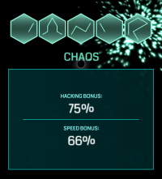

This page should allow you to learn Ingress portal hacking language faster. And you should know your Ingress ABC to make hacking really count ;-).

There is an on-going effort to put all glyphs in here (to be more exacrt - all glyphs that you could find in hacking riddles). If you find something missing then please do not hasitate to either file a bug report, or contact me via e-mail.
I'm also open to suggestions on improving this site so you can also request a feature in the same place you post bugs.